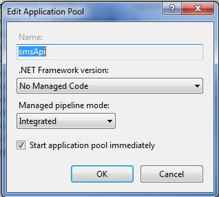
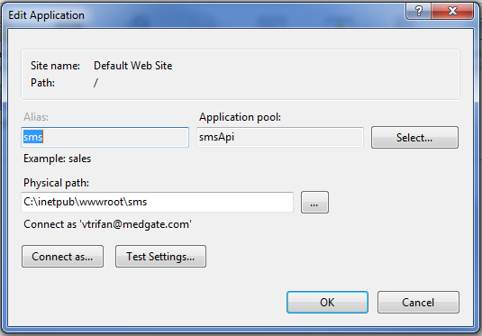
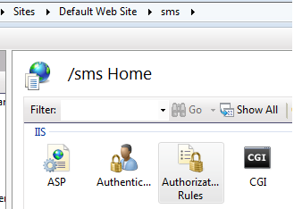
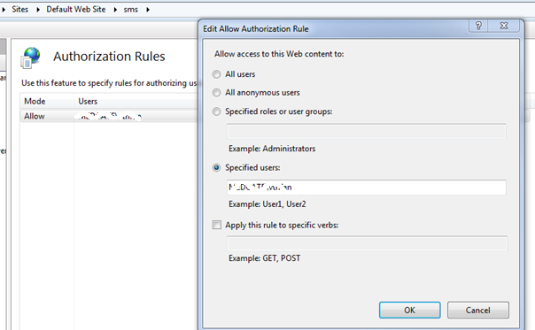

This service provides the ability for business rules to send SMS notifications to users.
If it is not already installed, on your server install the .NET Core Windows Server Hosting bundle.
You can acquire this from https://dotnet.microsoft.com. You will have to restart the server after the installation is complete. The .Net Core version must be 2.1.1 or newer.
To enable the SMS service:
If it is not already installed, on your server install the .NET Core Windows Server Hosting bundle.
Copy the SMS software from the zip file (sms v8.0.25.0.0.zip) in the SMS folder of the Cority Installation Package to the Web Server.
Use Windows IIS to create the application pool.
Expand your computer/server name, click Application Pools, and select Add Application Pool.

Create the Application.
Use the path of the package and the application pool created in the previous steps.

Use Test Settings. You might have to log in with a different path than the default if you encounter an error trying to access the default path.
Also, in order for the encryption to work, the application pool identity must have Admin rights.
Sites
Inside the Sites folder provided, there is a site file (with .site extension). The IIS application pool should have the right to read from it.
Specify the full path inside appsettings.json. See the example below. If you want the files to be encrypted and they are not encrypted, mark EncryptSiteFiles as true.
The site file name must match the site file name in Cority.
Security
The Web api is secured using simple Windows Authentication provided by IIS.
Open Windows IIS, open your application pool (set up in the previous steps), select the sms website, and click Authorization Rules.

Delete the Allow All rule then add rules for all the application pools/identities that will call this service. See below.

As the user who made the changes with IIS, open web.config and verify the modifications. You can manually add or edit rules directly in web.config in the future.
The process Logs are stored in each client’s database. The error logs are rolled out into the Logs folder for each day. You can change the log configurations in AppSettings.